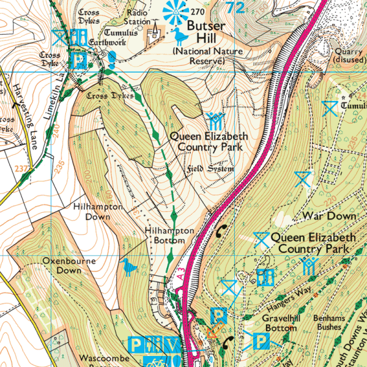

Hampshire Cross-Country League
Queen Elizabeth Country Park, Petersfield

View Ordnance Survey map (using Streetmap)
Get directions (using Google Maps)
View Bird's Eye (using Bing Maps)
Directions
Queen Elizabeth Country Park is situated 4 miles south of Petersfield on the A3.It can only be accessed from the A3. Please follow the regular signpost for the park and look for the cross-country car park signs once on the park's access roads. Don't park in the park centre's car park or the access roads - there are some particularly heavy fines for parking on the latter.
General information
All races will be on the slopes of Butser Hill, starting from the BBQ area adjacent to the race car park. It is a very open chalk downland course, excellent for spectators, very testing for competitors; there is no such thing as an easy course on Butser! If the weather isn't kind it is a particularly exposed site, be warned!
Please note both cattle and sheep graze the slopes of the hill. Cattle-grazed areas will be avoided, but there is no way to avoid sheep-grazed areas. Sheep do what sheep will do, so if you do mind running through sheep droppings, this isn't for you! There is a chance that sheep may be on the slopes; they will move.
- The races will follow the standard time table.
- Club tents can be pitched on the upper slopes of the BBQ field and all race admin will be on the lower slopes.
- Refreshments will be provided by QE Park also in the BBQ field.
- Portable toilets will be positioned in the car park area.
- First aid will be provided by GB-EMS also based in the BBQ field.
As you can see it all happens in or from the BBQ field: if all else fails head for there!
Can I thank in advance our friends from Winchester and District who will be marshalling the course after the Under 17 Women's race.
Phil Budd
City of Portsmouth AC